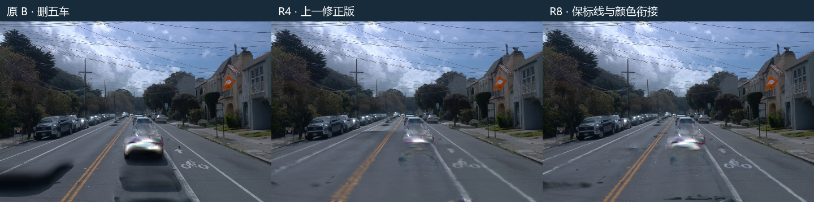
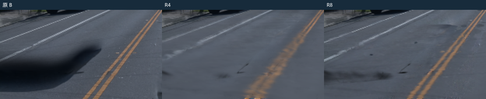
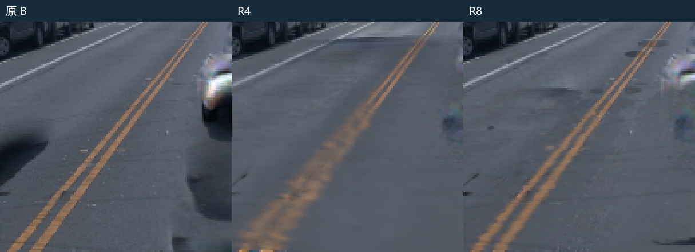
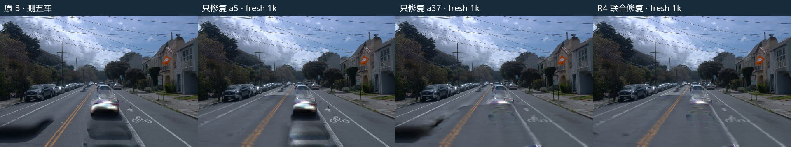
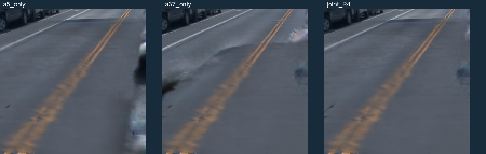
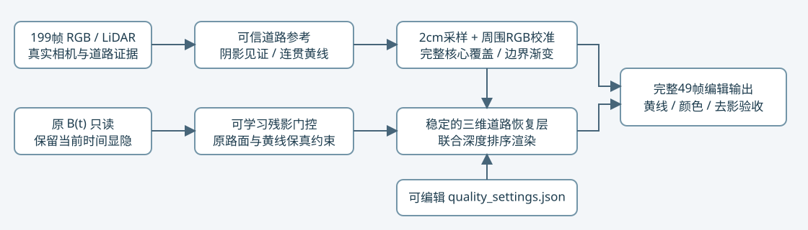
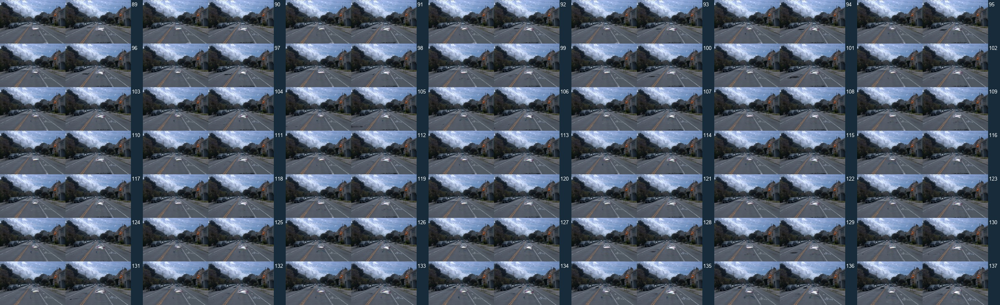

scene-008 · 黄线保真与左车道颜色衔接
2026-11-03 · 原生 v41 B30k · 完整199帧 BUILD 证据 · 最终 R8 独立1000步
针对用户指出的两个问题，使用周围干净道路 RGB 自适应校准、纵横可调三维包络、边界渐变和原有黄线保真。已知阴影区域保留完整修复覆盖。所有版本与原 B 的时间状态保持一致，没有图像硬切换。黄线与接缝指标改善，但a5/a37阴影代理MAE较R4回升，部分纹理/残影仍在；R8保留为候选，不宣称整体质量通过。
先看同一帧

左侧车道颜色衔接：

中央黄线：

局部图采用最近邻放大，不添加锐化或生成内容。三列均为同一相机、同一时刻、同一删五车集合。中央彩色车形残影仍是既有问题，不据这两项优化宣称全部静态残影已解决。
两个问题分别验收
| 固定49帧检查 | R4 | R8 | 下降 | 像素样本 |
|---|
| 黄线颜色偏差（相对原 B） | 0.055323 | 0.027400 | 50.5% | 45,776 |
| 左侧原修复边界接缝残差 | 0.031513 | 0.014359 | 54.4% | 76,676 |
| 左侧干净路面颜色偏差 | 0.011307 | 0.010401 | 8.0% | 531,989 |
| 新版左侧衔接带残差梯度 | 0.022322 | 0.020367 | 8.8% | 327,956 |
| 全图原修复边界残差梯度 | 0.029084 | 0.012607 | 56.7% | 180,441 |
颜色偏差为 sRGB MAE，基于原 B 与原参考构建的固定保留域；左侧为图像 x<220 的干净道路。衔接指标测量新包络边缘、剔除原暗影后的新增残差梯度，同一带同时评价 R4/R8。它们是道路保真与接缝代理，不是独立干净场景真值；不同版本自己的包络带不可跨版混作同分母。
| 阴影代理 | 原 B | R4 | R8 | 原固定有效分母 |
|---|
| a5 | 0.08083 | 0.00870 | 0.01779 | 18帧 / 3,712像素 |
| a37 | 0.07945 | 0.01069 | 0.01507 | 49帧 / 20,813像素 |
阴影 MAE 使用原固定强参考域、线性 RGB、像素样本加权，不通过缩小新修复范围改变分母。全部199帧均为 BUILD 输入，49帧也参与参考与编辑输入，不作为独立测试集。
用户追加：分别只修复 a5 / a37
两组从同一原生 v41 B fresh 启动，各正式1000步；均使用 R4 的8cm格点、同一199帧参考、固定道路颜色和0.99005 opacity、gate初值2、学习率0.06、原损失系数、相同随机相机序列及seed0。只改变单车道路范围、其贡献候选集和对应保护边界。共同输出仍删五车，从而只比较“修复谁”，没有偷偷更换删除背景。


| 真实独立1k训练 | 同一49帧黄线 MAE（45,776样本） |
|---|
| 只修复 a5 | 0.055444 |
| 只修复 a37 | 0.051502 |
| R4 联合修复 | 0.055323 |
两个独立单车模型也会影响黄线，因此联合训练不是黄线劣化的必要条件。两车轨迹的扩展道路域大量重叠，单车也会覆盖这一段标线；不能把三个误差的大小差异全部归因于“协同/冲突”，因为单车的候选与保护边界也随修复对象改变。
49帧逐值、训练与恢复验收 · a5单车 checkpoint 见独立回放包 · a37单车 checkpoint 见独立回放包
零训练拆层：覆盖本身是否足以损伤黄线
固定原 B，并把原生高斯门控全部设为1；不进行联合或单车训练。raw105近处连贯黄线固定604像素，a5、a37各自道路面与联合面的结果如下。两车在此处使用同一批道路格点，联合渲染并未复制成两层重复相加。
| 开启道路面 | 黄线 MAE | 恢复层 alpha·T |
|---|
| none | 0.000000 | 0.000 |
| a5 | 0.070645 | 0.842 |
| a37 | 0.070645 | 0.842 |
| both | 0.070645 | 0.842 |
三锚完整拆层收据。这证明当前道路覆盖在训练前就足以改变黄线；不是必须经过双车优化才出现的容量竞争。
与旧 a5 方法到底改了什么
| 项目 | 历史旧 a5 R2 | 本次 R4 |
|---|
| 道路表示 | 沿用原模型选中接收高斯的位置、尺度与核；局部修改颜色/opacity | 新建统一8cm格点，切向σ=5.2cm，法向σ=1.5cm |
| 颜色与覆盖 | 接收面颜色、opacity可学习；局部参考与有界曝光校准 | 199帧亮簇颜色融合，部分邻域插值；颜色与opacity≈0.99固定 |
| 范围 | raw101局部a5接收面 | 两车49帧轨迹扫掠+2m上下文，跨过黄线和干净道路 |
| 父模型 | 历史915,840行静态模型 | v41 B的2,022,726行静态模型 |
R4没有新增显式空间平滑损失。可确认的触发是：重建层越过标线并占主导，替换了原来较清楚的道路表示。8cm采样与高斯核带来隐式低通；多视图融合/插值及道路投影误差也可能混合标线和沥青。尚未把格距、核厚度、颜色聚合和几何误差逐项单独消融，不能宣称已量化哪一项贡献最大。旧 a5 并不是从同一个8cm表征“降了分辨率”，而是本次迁移换了表示及覆盖方式。
旧入口源码：[接收高斯适配器] [原生高斯选择] [旧参考与曝光校准]。历史权重不同，不把旧视觉与新单车训练当同权重配对。
确切原因与本次改动
旧 R4 对两车轨迹外扩2米范围内的大量原道路进行替换，固定8厘米道路格点覆盖了本来清楚的窄黄线。原门控的正则项还鼓励压低候选高斯 opacity，包括部分正常路面；恢复层与原 B 局部色调及纹理不同，形成左车道色块与接缝。关闭道路层、关闭门控、仅保留单车恢复面的零更新控制，均保留了相关证据。
独立单车1k及原生门控=1的零训练控制均已补齐，详见上方。当前证据不支持把黄线劣化归因于双车优化才会出现的容量问题。

道路层在三维坐标中构建：先登记真实阴影见证及原 B 的残影区域，再保留核心覆盖，向外作平滑过渡。周围可信干净道路的 RGB 残差形成连续局部校准场，避免直接把两处路面统一成一种灰色。原静态高斯继续使用自身当前位置与时间显隐；只稳定新增道路层。门控正则改为优先保留原模型，另外对黄线和干净路面施加保真约束。
周围RGB自适应的固定门控控制
保持最终高斯、opacity门控和相机不变，仅关闭颜色校准，参数更新0。左侧干净路面的浮点颜色偏差：关闭 0.013264 → 开启 0.010401，下降 21.6%。这只说明最终表示上的零更新颜色效果，不替代独立重训消融。49帧原值
实际使用的可调设置
打开 quality_settings.json · 可运行入口源码。这些参数用于构建三维道路恢复层，修改后须在新运行目录先执行 prepare_local.py --output-name coarse_inputs，再执行 refine_road.py 和 start_quality.py；默认参数入口已零更新重建验收。重训后才能改变固定输出；本报告播放器展示已完成的固定结果。
| 设置 | 本次值 | 作用 |
|---|
| 颜色格点 / 法向厚度σ | 2cm / 3mm | 细化真实图像采样并减少光栅模糊；几何继承8cm实测父格点切平面插值，不是新增LiDAR实测 |
| 纵向 / 横向外扩 | 0.40m / 0.40m | 沿道路前进 / 横跨道路方向分别控制修复种子外的过渡包络；不是整车修复总长度 |
| 核心比例 | 0.40 | 外扩前40%保留核心覆盖，其余60%连续渐变；已有阴影见证强制完整覆盖 |
| RGB 上下文尺度 | 纵向0.32m / 横向0.32m | 分别控制周围干净路面颜色校准场的平滑范围 |
| RGB 校准开关 / 强度 / 上限 | 开 / 1.0 / 每通道0.012 linear RGB | 有可信周围颜色才校准，限制大幅改色 |
| 黄线连通域 / 世界投票 | ≥40像素 / >12% | 保护连续黄线；不把白色车形亮斑当作标线保护 |
{
"detail": {
"cell_m": 0.02,
"normal_sigma_m": 0.003,
"colour_source": "best_clean_projected_resolution"
},
"coverage": {
"longitudinal_outer_m": 0.4,
"lateral_outer_m": 0.4,
"core_fraction": 0.4,
"preserve_observed_shadow_core": true
},
"adaptive_rgb": {
"enabled": true,
"sigma_longitudinal_m": 0.32,
"sigma_lateral_m": 0.32,
"max_linear_delta": 0.012,
"strength": 1.0
},
"markings": {
"connected_yellow_min_pixels": 40,
"world_vote_fraction": 0.12,
"protect_white_native_ghosts": false
}
}当前网格：R4 26,489格 → R8 11,595格；2,269个已有阴影见证格的核心覆盖率100%。细化后为185,520个三维高斯，164,280个子格有重新采样的真实来源，21,240个回退到原参考。用最清楚的合格真实视图保留细节，避免把窄黄线与沥青颜色平均。不是只把范围缩小：细采样、覆盖完整性、RGB连续校准与原道路保真共同决定结果，未对各项独立训练收益做完整消融。
完整49帧同步检查
原 BR4R8

49帧总览 · 每格左R4、右R8

保留的中间失败与计算
| 版本 | 黄线偏差 | a5阴影MAE | a37阴影MAE |
|---|
| R5 · 1000步 | 0.00582 | 0.05160 | 0.01798 |
| R6 · 1000步 | 0.04138 | 0.01139 | 0.01000 |
| R7 · 1000步 | 0.04056 | 0.01308 | 0.01098 |
R5只按原 B 的暗化选区并误将白色车形亮斑当标线，漏掉部分 a5 阴影；R6补齐覆盖但继承 R4 过度抑制的门控，黄线恢复不足。R7改用新门控后去影恢复，但8厘米层仍抹宽黄线。最终R8从原B建立新门控、优化器清零，将恢复道路细分到2厘米，使用最佳清晰真实视图的颜色及周围RGB自适应校准。每版正式1000步，共新增4000步；每版另32步短程验证、两次恢复后各1步，共136步验证/重放。结合之前R1–R4的4000步，当时累计实际更新8136。用户随后追加两组独立单车各1000步，并各做32步验证与两次1步重放，另2068步，当前累计10204步。中间失败完整远端保留，指标、日志与最终检查点另存。
最终训练 126.2秒，CUDA分配峰值 4.13GiB。三锚PNG在新进程完整恢复后逐字节相同，49帧视频完整解码；恢复后重复更新的CUDA归约有约1e-6量级参数差，三锚PNG仍一致，不宣称后续训练逐bit确定。短程验证不是10分钟smoke，本次每版训练约2分钟。
旁路与原 B 最大差 0.0；固定相机道路时间差为0，原静态仍保留时间变化。原始四份 B 权重保持只读。GPU按用户要求保持开启，没有关机动作。human_verdict=null，quality_accepted=false；failure_ledger_refs=[V82-F01,V82-F06]，failure_ledger_delta=none。
完整逐帧指标 · 构建与设置收据 · 执行合同 · 最终 addon checkpoint · 完整回放包已另行保存在用户本地及远端